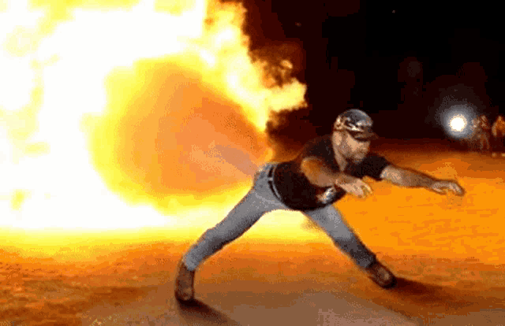

|  | Extreme Paintbrawl review |
|

Extreme Paintbrawl is a game (technically) for the PC, released in 1998 by the well-known brand Head Games. Head Games was the arm of Activision aimed at producing budget-friendly games, so most of their products are quite bad, but a common conscensus is that Extreme Paintbrawl is the peak of garbage and I can see why. Upon launching it, the game throws you into the main menu which is a badly dithered png of a camp with hyperlinks on it. The main building proudly displays the logo of one of the game's sponsors - Sheridan, the other being Crosman with its logos defiling many of the maps in this game. From the menu you can play a Pickup Match, a Practice Session, stock up on guns, balls, air and teammates or leave the game. You should probably do the latter. If, however, you are especially brave of heart and/or dead of brain, you may concievably want to experience the real meat-and-potatoes of this game, those being the Pickup Matches. You can play a pickup match either with your team in a season or just randomly. For me, the season play function simply does not work. I have one person on my team, I have bought and assigned them a gun, air and paint, yet, when I go to play a season match, it complains that "All team members must have guns". I don't know why this is happening and I do not care enough to fix it, so I'm not going to look at the season matches. To play a random Pickup Match you must click on the sign saying so. If you have done that, congratulations, you reach a loading screen that takes approx. 40 sec to load a single player game. At first, I thought it was running some sort of weird demo screen, but no, the levels just load that long. When you are thrown into a game, likely the first thing you will notice is the stab-your-eye-out graphics. Extreme Paintbrawl runs a modified version of the Build engine (of Duke Nukem 3D fame) and features wonderful sprites for graphics of people, guns, foliage and just anything that isn't level geometry. In good games like Duke Nukem 3D, this isn't much of a problem as the sprites are animated to provide a not nauseating depiction of movement. In this game however, I immediately got the impression that I was playing with a team of heroin addicts going through withdrawal. In keeping with this bizzare theme of drug addiction, the AI is horrendous. It ranges from mentally handicapped shrimp on crack to e-sports players who will snipe you in milliseconds with no in between. Switching between these two modes is also seemingly random, as one moment you'll be laughing at some poor sod twitching in a corner, and the next he'll have shot your brains out onto the wall behind you. What makes the gameplay even worse is the control scheme. As is fitting for an older game based on the Build engine, you don't control with the WASD control scheme, but with the numpad. Besides that, the controls are impressively jacked. It doesn't take inputs from the arrow keys, only the numpad. In addition, the mouse sometimes acts as a joystick, so, if you move the mouse forward, you will move forward yourself. What makes the game feel like even more of a fever dream is the accompanying soundtrack. Besides being so quiet that I didn't notice it at all at first, it is impressively tone-deaf. To me, it sounds like it might have been vaguely inspired by Metallica's One album, but in the same sense that the VW Beetle was inspired by the Porsche 911. The speedmetal drums are kind of there and there seems to have been an attempt at a One-like intro with the twangy guitar strings, but then it goes off any kind of feeble rails that were there to begin with. The drums ditch any tempo, random interjections of what sounds like a cat stepping on a piano start and the composer commences dragging his fingers up and down the strings in a way reminiscent of a 3-year-old slamming their hands up and down the piano. In conclusion, this game is absolutely terrible and a chore to play. The graphics suck, the controls suck, the soundtrack is more soundcrack. However, what if I told you that this game was done from start to finish in just two weeks . It really does explain most of the problems of this game. The game is so rushed that it is even reflected in the readme file, the writer thanking all the programmers for their overtime work into the afternoons. Another point of unfortunate interest is the AI, which is a very trial version of what it was supposed to be. If it was completed properly, the AI would've been a modified version of the Build engine AI. What it turned out to be is a very cut down version of the Build engine AI. Speaking of cut down versions, the soundtrack is, apparently, a compilation of demo samples sent in to Head Games by the composer Todd Duane and Head Games decided to just use the samples as the full game soundtrack. Does this make the game any more enjoyable or worth buying though? Hell no, I don't recommend anyone try this unless as a point of slightly masochistic interest for no more than 5 minutes. It is good then that it is available for free download on an abandonware site, though I'm inclined to let it sit there undownloaded. |
 |
| Computers |
| Reviews |
| Repair |
| PC game reviews |
| Fountain pens |
| Reviews |
| Repair |
| Misc |